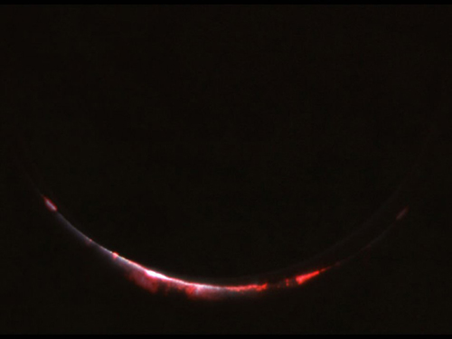
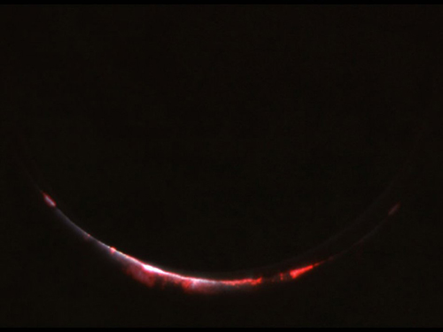

« Effondrement »
Le vaisseau entamait sa descente. Il venait des étoiles, des noires vélocités, des rayonnements mouvants et des golfes silencieux de l’espace. C’était un nouveau vaisseau ; il contenait du feu dans ses entrailles et des hommes dans ses cellules de métal, et il se déplaçait, leste et fringant, dans un silence impeccable. Il transportait dix-sept hommes, dont un capitaine. La foule réunie sur l’aire de lancement de l’Ohio avait poussé des acclamations et agité les mains dans le soleil, et la fusée avait craché d’immenses fleurs de chaleur et de couleur avant de s’enfoncer dans l’espace pour le troisième voyage à destination de Mars ! À présent elle réduisait sa vitesse de toute l’efficacité de son métal dans les couches supérieures de l’atmosphère martienne. N’ayant rien perdu de sa beauté ni de sa puissance. Elle avait traversé les eaux ténébreuses de l’espace comme un pâle léviathan ; elle avait dépassé la vieille lune et s’était lancée dans une succession de néants. Chacun son tour, ses passagers avaient été malmenés, ballottés, pris de nausée, rendus à la santé. L’un d’eux était mort, mais maintenant les seize survivants, l’œil clair, le visage plaqué aux hublots massifs, regardaient Mars foncer vers eux.
« Mars ! s’écria le navigateur Lustig.
— Cette bonne vieille Mars ! s’exclama Samuel Hinkston, l’archéologue.
— Ça alors », dit le capitaine John Black.La fusée se posa sur une pelouse de gazon vert. Tout près, dans l’herbe, se dressait une biche en fer. Un peu plus loin s’élevait une grande maison brune de style victorien, paisible dans le soleil, surchargée d’ornements rococo, aux fenêtres arborant des carreaux multicolores, bleus, roses, jaunes et verts. La terrasse couverte était fleurie de géraniums duveteux et une vieille balancelle accrochée au plafond oscillait doucement sous la brise. Au faîte de la maison s’érigeait une coupole avec des vitraux en losange et un toit en poivrière ! Par la fenêtre de façade on pouvait apercevoir, reposant sur un pupitre, un morceau de musique intitulé Mon bel Ohio. Autour de la fusée, dans quatre directions, s’étendait la petite ville, verdoyante et immobile dans le printemps martien. Il y avait des maisons blanches, d’autres en brique rouge, et de grands arbres, ormes, érables, marronniers, qui bruissaient dans le vent. Et des églises pourvues de campaniles où dormaient des cloches dorées. Voilà ce que virent les occupants de la fusée quand ils regardèrent dehors. Puis ils se dévisagèrent et s’absorbèrent de nouveau dans la contemplation du paysage. Ils se tenaient par les coudes, soudain incapables de respirer, semblait-il. Puis ils pâlirent.
« Le diable m’emporte, murmura Lustig en se frottant la figure, les doigts tout engourdis. Le diable m’emporte.
— Ce n’est pas possible, dit Samuel Hinkston.
— Seigneur ! » s’exclama le capitaine John Black.Là-dessus arriva un appel du chimiste. « Capitaine, l’atmosphère est plutôt raréfiée. Mais il y a assez d’oxygène. On ne risque rien.
— Alors on va sortir, dit Lustig.
— Attendez, fit le capitaine. Comment savoir à quoi nous avons affaire ?
— C’est une petite ville où l’air est raréfié mais respirable, capitaine.
— Et une petite ville identique à celles de la Terre, ajouta Hinkston, l’archéologue. Incroyable. C’est impossible, mais c’est comme ça. »Le capitaine Black lui jeta un coup d’œil nonchalant.
« Pensez-vous que les civilisations de deux planètes puissent progresser au même rythme et évoluer de la même façon, Hinkston ?
— Je m’en serais bien gardé, capitaine. »Black se tenait près du hublot.
« Regardez-moi ça. Les géraniums. Une plante bien spécialisée. Cette variété particulière n’est connue sur Terre que depuis cinquante ans. Pensez aux millénaires que requiert l’évolution des plantes. Et dites-moi s’il est logique que les Martiens possèdent : un, des fenêtres à vitraux ; deux, des coupoles ; trois, des balancelles ; quatre, un instrument qui ressemble à un piano et en est probablement un ; et cinq, si vous regardez attentivement dans cette lunette télescopique, est-il logique qu’un compositeur martien ait écrit un morceau de musique intitulé, assez étrangement, Mon bel Ohio ? Tout cela signifierait qu’il existe un fleuve du nom d’Ohio sur Mars !
— Le capitaine Williams, bien sûr ! s’écria Hinkston.
— Quoi ?
— Le capitaine Williams et ses trois hommes d’équipage ! Ou Nathaniel York et son compagnon. Ça expliquerait tout !
— Ça n’explique rien du tout. Selon toute probabilité, l’expédition York a explosé le jour où elle a touché Mars, entraînant la mort de York et de son compagnon. Quant à Williams et ses trois hommes, leur vaisseau a explosé le lendemain de leur arrivée. En tout cas, leur radio a cessé d’émettre à ce moment-là, d’où notre supposition que s’ils avaient survécu, ils nous auraient contactés. Et de toute façon, l’expédition York ne remonte qu’à un an, et le capitaine Williams et ses hommes n’ont atterri ici qu’en août dernier. En admettant qu’ils soient encore en vie, auraient-ils pu, même avec l’aide d’une race martienne particulièrement douée, édifier une ville pareille et la vieillir en si peu de temps. Regardez-moi ça ; ça fait bien soixante-dix ans que cette ville est là. Regardez le bois des montants d’escalier ; regardez les arbres, tous centenaires ! Non, ce n’est l’œuvre ni de York ni de Williams. Il s’agit d’autre chose. Ça ne me plaît pas, et je ne quitterai pas le vaisseau avant d’en avoir le cœur net.
— D’ailleurs, fit Lustig en approuvant de la tête, Williams et ses hommes, tout comme York, se sont posés sur l’autre face de Mars. Nous avons pris grand soin d’atterrir sur ce côté-ci.
— Excellente remarque. Juste au cas où une tribu locale de Martiens hostiles aurait tué York et Williams, nous avions instruction de nous poser dans une autre région pour éviter que ne se reproduise un tel désastre. Nous sommes donc, en principe, sur un sol que Williams et York n’ont jamais vu.
— Bon sang ! s’exclama Hinkston. Je veux aller voir cette ville de près, capitaine, si vous le permettez. Il se peut qu’il existe des modes de pensée, des courbes de civilisation identiques sur toutes les planètes de notre système solaire. Il se peut que nous soyons au seuil de la plus grande découverte psychologique et métaphysique de notre époque !
— Je reste partisan d’attendre un moment, s’obstina Black.
— Peut-être sommes-nous en présence d’un phénomène qui, pour la première fois, prouverait irréfutablement l’existence de Dieu, capitaine.
— Beaucoup de personnes ont une foi solide sans avoir besoin d’une telle preuve, Mr. Hinkston.
— Je fais partie du nombre, capitaine. Mais une ville comme celle-ci ne saurait se passer d’une intervention divine. Cette précision dans le détail. Elle m’inspire de tels sentiments que je ne sais pas si je dois rire ou pleurer.
— Dans ce cas, ne faites ni l’un ni l’autre jusqu’à ce que nous sachions ce que nous affrontons.
— Affrontons ? intervint Lustig. Nous n’affrontons rien, capitaine. C’est là une gentille petite ville, tranquille et verdoyante, qui ressemble beaucoup à la bourgade vieillotte où je suis né. Elle me plaît bien.
— Quand êtes-vous né, Lustig ?
— En 1980, capitaine.
— Et vous, Hinkston ?
— En 1985, capitaine. À Grinnell, dans l’Iowa. Et j’ai l’impression d’être ici chez moi.
— Hinkston, Lustig, je pourrais être votre père à tous les deux. J’ai exactement quatre-vingts ans. Je suis né en 1950, dans l’Illinois, et par la grâce de Dieu et d’une science qui, depuis cinquante ans, sait comment faire retrouver la jeunesse à certains vieillards, me voici sur Mars, pas plus fatigué que vous autres, mais infiniment plus méfiant. Cette ville a l’air tout à fait paisible et accueillante, et tellement semblable à Green Bluff, Illinois, que ça me fait peur. Elle ressemble trop à Green Bluff. » Il se tourna vers le radio. « Appelez la Terre. Dites-leur que nous avons touché le sol de Mars. C’est tout. Dites-leur que nous transmettrons un rapport complet demain.
— Bien, capitaine. »Black approcha du hublot un visage qui aurait dû être celui d’un octogénaire, mais n’accusait que la moitié de cet âge. « Voilà ce que nous allons faire, Lustig. Hinkston, vous et moi allons jeter un coup d’œil à cette ville. Les autres resteront à bord. S’il arrive quoi que ce soit, ils pourront filer. Mieux vaut perdre trois hommes que toute une expédition. Si les choses tournent mal, notre équipage pourra prévenir la prochaine fusée. Celle du capitaine Wilder, je crois, qui devrait être prête à décoller à Noël. S’il y a quelque hostilité à redouter de la part de Mars, il faut absolument que la prochaine fusée soit bien armée.
— La nôtre l’est. Nous avons un véritable arsenal à notre disposition.
— Alors dites aux hommes de se mettre en état d’alerte. Allons-y, Lustig, Hinkston. »Les trois hommes gagnèrent ensemble les niveaux inférieurs du vaisseau. C’était une superbe journée de printemps. Perché sur un pommier en fleur, un merle n’en finissait plus de siffler. Des pluies de pétales neigeux s’envolaient à chaque souffle du vent dans les branches verdoyantes, imprégnant l’air de leur parfum. Quelque part en ville, quelqu’un jouait du piano, et la musique allait et venait sur un rythme doux, somnolent. L’air était celui de La Belle Rêveuse. Ailleurs, un phonographe à la voix grêle et éraillée nasillait un enregistrement de Giboulées d’avril, chanté par Al Jolson. Les trois hommes s’étaient immobilisés à l’extérieur du vaisseau. Ils aspirèrent l’air ténu, ténu, suffoquant à demi, et se mirent lentement en mouvement pour ne pas se fatiguer. À présent le phonographe jouait : Oh, donnez-moi un soir de juin Le clair de lune et vous… Lustig commença à trembler. Samuel Hinkston en fit autant. Le ciel était calme et serein. Un ruisseau coulait quelque part dans la fraîcheur ombragée d’une ravine. Ailleurs, on reconnaissait le trot et les cahots d’un cheval et de sa charrette.
« Capitaine, dit Samuel Hinkston, il faut admettre, force est d’admettre qu’on a commencé à envoyer des fusées sur Mars avant la Première Guerre mondiale.
— Non.
— Alors, comment expliquez-vous ces maisons, la biche en fer, les pianos, la musique ? » Hinkston prit le capitaine par le coude, bien décidé à se montrer persuasif, et le regarda dans les yeux. « Disons qu’il y avait en 1905 des gens qui, détestant la guerre, se sont secrètement entendus avec des scientifiques ; ils ont construit une fusée et sont venus ici, sur Mars…
— Non, non, Hinkston.
— Pourquoi pas ? Le monde était différent en 1905 ; le secret était beaucoup plus facile à garder.
— S’agissant d’une chose aussi complexe qu’une fusée ? Non, impossible de garder ça secret.
— Ils se sont installés ici, et naturellement ils ont construit des maisons semblables à celles de la Terre parce qu’ils emmenaient leur culture avec eux.
— Et ils ont vécu ici toutes ces années ?
— Dans la paix et la tranquillité, oui. Peut-être ont-ils fait plusieurs voyages, assez pour atteindre la population d’une petite ville ; puis ils en sont restés là de peur d’être découverts. Voilà pourquoi cette ville semble si vieillotte. Personnellement, je n’y vois rien qui soit postérieur à 1927, et vous ? À moins, capitaine, que les voyages interplanétaires ne soient plus anciens qu’on ne le croit. Il se peut qu’ils aient commencé quelque part dans le monde il y a des siècles de cela et qu’ils aient été gardés secrets par le petit nombre d’hommes qui sont venus sur Mars pour ne faire qu’occasionnellement des séjours sur la Terre au cours des siècles en question.
— À vous entendre, on est presque convaincu.
— Il ne peut qu’en être ainsi. Nous en avons la preuve sous les yeux ; il ne nous reste qu’à trouver des gens pour confirmer. »Le tapis de gazon qui étouffait le bruit de leurs bottes sentait l’herbe fraîchement coupée. Malgré lui, le capitaine John Black se sentait envahi par une immense quiétude. Il y avait trente ans qu’il ne s’était pas trouvé dans une petite ville ; le bourdonnement des abeilles printanières le berçait, l’apaisait, et l’air de fraîcheur de chaque chose lui mettait du baume à l’âme. Ils posèrent le pied sur la terrasse. Le plancher résonna sous leurs pas quand ils se dirigèrent vers la contre-porte treillissée. À l’intérieur ils aperçurent un rideau de perles suspendu en travers du vestibule, un lustre de cristal et un tableau de Maxfield Parrish dans son cadre au-dessus d’un confortable fauteuil Morris. La maison sentait l’ancien, le grenier, et respirait un confort infini. On pouvait entendre un tintement de glaçons dans un pichet de citronnade. Dans une cuisine invisible, en raison de la chaleur du jour, quelqu’un préparait un repas froid. Une femme fredonnait d’une douce voix de tête. Le capitaine John Black tira la sonnette. Des pas menus se rapprochèrent dans le vestibule et une femme au visage affable, d’une quarantaine d’années, vêtue d’une robe comme il devait s’en porter en 1939, les dévisagea à travers le treillis.
« En quoi puis-je vous être utile ?
— Je vous demande pardon, dit le capitaine Black d’une voix mal assurée. Mais nous cherchons… c’est-à-dire, pourriez-vous nous aider… » Il s’interrompit. Elle l’enveloppa d’un regard sombre, songeur.
« Si c’est pour me vendre quelque chose…, commença-t-elle.
— Non, attendez ! s’écria-t-il. Quelle est cette ville ? »Elle le toisa de la tête aux pieds. « Comment ça, quelle est cette ville ? Comment pouvez-vous vous trouver dans une ville sans en connaître le nom ? » On aurait dit que le plus grand désir du capitaine était d’aller s’asseoir à l’ombre d’un pommier. « Nous ne sommes pas d’ici. Nous aimerions savoir ce qui explique la présence de cette ville en ces lieux, et la vôtre par la même occasion.
— Vous travaillez pour le recensement ?
— Non.
— Tout le monde sait que cette ville a été construite en 1868. C’est un jeu ?
— Non, ce n’est pas un jeu ! s’écria le capitaine. Nous venons de la Terre.
— Vous voulez dire que vous sortez du sol ? s’étonna la femme.
— Non, nous arrivons de la troisième planète, la Terre, en vaisseau spatial. Et nous venons de nous poser ici, sur la quatrième planète, Mars…
— Ici, expliqua la femme comme si elle s’adressait à un enfant, nous sommes à Green Bluff, dans l’Illinois, sur le continent américain, baigné par les océans Atlantique et Pacifique, dans ce que l’on appelle le monde ou, parfois, la Terre. Et maintenant, allez-vous-en. Adieu. »Elle s’enfonça dans le vestibule, écartant le rideau de perles du bout des doigts au passage. Les trois hommes se regardèrent.
« Enfonçons la porte, dit Lustig.
— On ne peut pas faire ça. C’est une propriété privée. Bon Dieu ! »Ils allèrent s’asseoir sur l’escalier de la terrasse.
« Dites-moi, Hinkston, il ne vous est pas venu à l’idée que nous avons peut-être, je ne sais comment, dévié de notre route, rebroussé chemin par accident et atterri sur la Terre ?
— Comment aurait-on pu faire ça ?
— Je ne sais pas, je ne sais pas. Bon sang, laissez-moi réfléchir.
— Enfin, quoi, nous avons contrôlé notre trajectoire tout du long. Nos chronos indiquaient tant et tant de kilomètres. Nous avons dépassé la Lune, plongé dans l’espace et nous voilà ici. Sur Mars, j’en suis absolument certain.
— Mais supposons, dit Lustig, que par accident, dans l’espace, dans le temps, nous nous soyons perdus dans les dimensions pour atterrir sur une Terre d’il y a trente ou quarante ans.
— Oh, ça va, Lustig ! »Lustig revint vers la porte, tira la sonnette et lança dans la fraîche pénombre des pièces : « En quelle année sommes-nous ?
— 1956, bien sûr », répondit la dame. Assise dans un fauteuil à bascule, elle sirotait un verre de citronnade.
« Vous avez entendu ? » Lustig se retourna d’un bloc vers les autres. « 1956 ! Nous avons bel et bien remonté le temps ! Nous sommes bel et bien sur la Terre ! »Lustig se rassit et les trois hommes se laissèrent aller à l’émerveillement et à la terreur que leur inspirait une telle pensée. Posées sur leurs genoux, leurs mains étaient agitées de tremblements spasmodiques. « Je n’avais pas demandé ça, dit le capitaine. Ça me fout les jetons. Comment est-ce possible ? Si seulement on avait pu emmener Einstein avec nous !
— Est-ce qu’un seul habitant de cette ville va nous croire ? s’inquiéta Hinkston. Est-ce qu’on joue un jeu dangereux ? Avec le temps, je veux dire. Est-ce qu’on ne devrait pas repartir et rentrer chez nous ?
— Non. Pas avant d’avoir fait un autre essai. »Ils dépassèrent trois maisons et arrivèrent en vue d’un petit cottage blanc dominé par un chêne. « Je tiens à rester aussi logique que possible, dit le capitaine. Et je ne crois pas qu’on ait vraiment mis dans le mille. Supposez, Hinkston, comme vous l’avez d’abord suggéré, que les voyages interplanétaires remontent à des années. Et qu’au bout d’un certain nombre d’années passées ici, nos Terriens aient commencé à avoir le mal du pays. D’abord une légère névrose, puis une psychose en bonne et due forme. Pour arriver à la démence caractérisée. Que feriez-vous, en tant que psychiatre, si vous étiez confronté à un tel problème ? » Hinkston réfléchit. « Eh bien, je crois que j’infléchirais la civilisation de façon que Mars ressemble tous les jours un peu plus à la Terre. Si j’avais les moyens de reproduire chaque plante, chaque route, chaque lac et même un océan, c’est ce que je ferais. Ensuite, par le biais de quelque hypnose collective, je persuaderais tous les habitants d’une ville comme celle-ci qu’ils se trouvent effectivement sur la Terre, et non sur Mars.
— Pas mal, Hinkston. Je crois que nous sommes sur la bonne voie. Cette femme que nous avons vue tout à l’heure se croit sur la Terre. Ça lui permet de conserver sa santé mentale.Elle et tous les habitants de cette ville sont les sujets de la plus grande expérience de migration et d’hypnose que vous aurez jamais l’occasion de contempler.
— Bien vu, capitaine ! s’écria Lustig.
— Tout à fait ! renchérit Hinkston.
— Bon, soupira le capitaine. Nous voilà parvenus quelque part. Je me sens mieux. Tout ça est un peu plus logique. Cette histoire de temps, d’aller et retour et de voyage dans le temps me met l’estomac à l’envers. Mais comme ça… » Le capitaine sourit. « Hé, hé, j’ai l’impression que nous allons être plutôt populaires par ici.
— Est-ce bien sûr ? objecta Lustig. Après tout, comme les Pèlerins, ces gens sont venus ici pour fuir la Terre. Peut-être qu’ils ne seront pas tellement contents de nous voir. Peut-être vont-ils essayer de nous chasser ou de nous tuer.
— Notre armement est supérieur. Direction la prochaine maison. En avant. »Mais à peine avaient-ils traversé la pelouse que Lustig s’arrêta net, le regard fixé côté ville, sur la rue tranquille, absorbée dans son rêve d’après-midi. « Capitaine, dit-il.
— Qu’est-ce qu’il y a, Lustig ?
— Oh, capitaine, capitaine, ce que je vois… » Et Lustig se mit à pleurer. Ses doigts s’élevèrent, crispés et tremblants, et son visage n’était qu’émerveillement, joie et incrédulité. Il semblait sur le point de devenir fou de bonheur d’une seconde à l’autre. Les yeux rivés sur la rue, il commença à courir, trébuchant, tombant, se relevant, reprenant sa course. « Regardez, regardez !
— Ne le laissons pas s’éloigner ! » Le capitaine s’élança à sa poursuite.À présent Lustig filait à toute allure en poussant des hurlements. Il tourna dans un jardin à mi-parcours de la rue ombragée et bondit sur la terrasse d’une grande maison verte arborant un coq de fer sur le toit. Il cognait à la porte, criant et pleurant, quand Hinkston et le capitaine le rejoignirent. Ils étaient tous à bout de souffle, épuisés par leur galopade dans l’air raréfié.
« Grand-mère ! Grand-père ! » s’écria Lustig.Deux vieillards se tenaient dans l’entrée.
« David ! » s’exclamèrent-ils d’une voix fluette. Et ils se précipitèrent pour l’enlacer, lui tapoter le dos et tourner autour de lui. « David, oh, David, ça fait tellement longtemps ! Comme tu as grandi, mon garçon, quel costaud tu es devenu. Oh, mon petit David, comment vas-tu ?
— Grand-mère, grand-père ! sanglotait David Lustig. Vous avez des mines splendides, splendides ! »Il les agrippait, les faisait pivoter, les embrassait, les étreignait, leur pleurait dessus, les tenait de nouveau à bout de bras, contemplant les deux vieillards d’un œil clignotant. Le soleil brillait dans le ciel, le vent soufflait, l’herbe était verte, la porte d’entrée grande ouverte.
« Entre, mon garçon, entre. Il y a du thé glacé pour toi, tout frais, un plein pot !
— J’ai des amis avec moi. » Lustig se retourna, hilare, et adressa des signaux frénétiques au capitaine et à Hinkston. « Allez, capitaine, venez.
— Bien le bonjour, dirent les vieux. Entrez donc. Tous les amis de David sont nos amis. Ne restez pas plantés là ! »Une agréable fraîcheur régnait dans le salon de la vieille maison. Une haute pendule de grand-mère faisait entendre son lent tic-tac de bronze dans un coin. Des coussins mœlleux recouvraient de larges divans, les murs étaient remplis de livres, le plancher s’agrémentait d’un tapis en forme de grosse rose et le thé glacé qui s’embuait au creux de la main rafraîchissait les gosiers desséchés.
« À notre santé à tous. » Grand-mère porta son verre à son sourire de porcelaine.
« Depuis combien de temps êtes-vous ici, grand-mère ? demanda Lustig.
— Depuis notre mort, répondit-elle d’un ton sec.
— Depuis votre quoi ? » Le capitaine Black reposa son verre.
« Eh oui. » Lustig hocha la tête. « Il y a trente ans qu’ils sont morts.
— Et vous restez assis là bien tranquillement ! s’écria le capitaine.
— Peuh ! » La vieille femme cligna un œil pétillant.
« Qui êtes-vous pour mettre en question ce qui arrive ? Nous sommes ici. Qu’est-ce que la vie, après tout ? Qui décide des pourquoi, des comment et des où ? Tout ce que nous savons, c’est que nous sommes ici, rendus à la vie, et qu’il n’y a pas de questions à se poser. Une seconde chance. » Elle s’approcha de Black à petits pas et lui tendit son mince poignet. « Touchez. » Le capitaine toucha.
« Résistant, n’est-ce pas ? » Il acquiesça. « Alors, fît-elle, triomphante, pourquoi se fatiguer à poser des questions ?
— Eh bien, dit le capitaine, c’est simplement que nous n’avons pas pensé une seconde que nous trouverions quelque chose de ce genre sur Mars.
— Et voilà que vous l’avez trouvé. Laissez-moi vous dire qu’il y a sur chaque planète bien des choses qui vous montreront que les voies de Dieu sont infinies.
— Est-ce là le paradis ? demanda Hinkston.
— Absurde. Non. C’est un monde où l’on a une deuxième chance. Personne ne nous a dit pourquoi. Mais personne ne nous a dit pourquoi nous étions sur la Terre, non plus. Cette autre Terre, je veux dire. Celle d’où vous venez. Comment savoir s’il n’y en avait pas encore une autre avant celle-là ?
— Bonne question », dit le capitaine.Lustig continuait de sourire à ses grands-parents. « Ça alors, ça fait plaisir de vous voir. Ça alors, ça fait plaisir. » Le capitaine se leva et se frappa la cuisse d’un geste désinvolte. « Il faut qu’on y aille. Merci pour les rafraîchissements.
— Vous reviendrez, bien entendu, dirent les vieillards. Ce soir pour dîner ?
— On tâchera, merci. Il y a tellement à faire. Mes hommes attendent mon retour à la fusée et… »Il s’interrompit. Regarda vers la porte, stupéfait. Au loin, dans le soleil, on distinguait un concert de voix, des cris et une immense clameur.
« Qu’est-ce qui se passe ? demanda Hinkston.
— Nous n’allons pas tarder à le savoir. » Et le capitaine Black d’être déjà dehors, en train de traverser la pelouse au pas de course pour gagner la rue de la petite ville martienne.Il s’immobilisa en vue de la fusée. Les trappes étaient ouvertes et l’équipage se déversait dehors en agitant les mains. Une foule s’était rassemblée et, au milieu de tous ces gens, les membres de l’équipage s’empressaient, parlaient, riaient, serraient des mains. On se lançait dans de petites danses. On s’agglutinait. La fusée restait vide et abandonnée. Une fanfare éclata dans le soleil, envoyant un air allègre de ses tubas et trompettes haut levés qu’accompagnait le roulement des tambours et le son aigu des fifres. Des petites filles blondes comme les blés sautaient à pieds joints. Des petits garçons lançaient des hourras. De gros messieurs offraient des cigares de dix cents à la ronde. Le maire fit un discours. Puis chaque membre de l’équipage, une mère à un bras, un père ou une sœur à l’autre, disparut le long de la rue comme par enchantement dans de petits cottages ou de grandes maisons.
« Arrêtez ! » s’écria le capitaine Black.Les portes se refermèrent en claquant. La chaleur s’accrut dans la clarté du ciel printanier, et tout redevint silencieux. La fanfare se tut à l’angle d’un carrefour, laissant la fusée briller toute seule, éblouissante, sous le soleil.
« Déserteurs ! dit le capitaine. Ils ont déserté le vaisseau, ma parole ! J’aurai leur peau, nom de Dieu ! Ils avaient des ordres !
— Capitaine, dit Lustig, ne soyez pas trop dur avec eux. Tous ces gens étaient d’anciens parents et amis.
— Ce n’est pas une excuse !
— Pensez à ce qu’ils ont pu ressentir, capitaine, en voyant des visages familiers à l’extérieur du vaisseau.
— Les ordres sont les ordres, bon sang !
— Et vous, capitaine, comment auriez-vous réagi ?
— J’aurais obéi aux ordres… » La bouche du capitaine demeura ouverte.Le long du trottoir, marchant à grandes enjambées sous le soleil martien, grand, souriant, les yeux d’un bleu étonnamment clair, s’avançait un jeune homme dans les vingt-six ans. « John ! » lança-t-il, et il se mit à courir.
« Quoi ? » Black vacilla.
« John, vieille canaille ! »Le jeune homme arriva à sa hauteur, lui empoigna la main et lui assena de grandes claques dans le dos.
« C’est toi, dit le capitaine Black.
— Bien sûr, qui croyais-tu que c’était ?
— Edward ! » Le capitaine se tourna vers Lustig et Hinkston sans lâcher la main de l’étranger. « Voici mon frère Edward. Ed, je te présente mes hommes, Lustig, Hinkston. Mon frère ! »Ils se tirèrent par les mains et les bras et finirent par s’embrasser.
« Ed !
— John, sacré bon à rien !
— Tu as une mine splendide, Ed, mais dis-moi, Ed, qu’est-ce que c’est que tout ça ? Tu n’as pas changé depuis tout ce temps. Tu es mort, je m’en souviens, à vingt-six ans. J’en avais alors dix-neuf. Bon Dieu, il y a tellement longtemps, et te voilà, et… zut, qu’est-ce qui se passe ?
— Maman attend, dit Edward Black avec un grand sourire.
— Maman ?
— Et papa aussi.
— Papa ? » Le capitaine faillit en tomber à la renverse, comme assommé. Il se mit à marcher d’un pas raide, sans coordination. « Papa et maman vivants ? Où ça ?
— À la vieille maison d’Oak Knoll Avenue.
— La vieille maison… » Le capitaine ouvrit de grands yeux ravis. « Vous avez entendu ça, Lustig, Hinkston ? »Hinkston était déjà parti. Il avait vu sa propre maison au bout de la rue et s’y rendait à toutes jambes. Lustig riait.
« Vous voyez, capitaine, ce qui est arrivé à tout l’équipage ? C’était plus fort qu’eux.
— Oui. Oui. » Le capitaine ferma les paupières.
« Quand j’ouvrirai les yeux, tu auras disparu. » Il cilla.
« Tu es encore là. Bon Dieu, Ed, mais tu as l’air en pleine forme !
— Viens, le déjeuner t’attend. J’ai prévenu maman.
— Capitaine, dit Lustig, si vous avez besoin de moi, je serai chez mes grands-parents.
— Quoi ? Oh, très bien, Lustig. Alors, à plus tard. »Edward le prit par le bras et l’entraîna. « Voilà la maison. Tu te souviens ?
— Et comment ! Je te parie que j’arrive le premier à la terrasse ! » Ils s’élancèrent. Les arbres filaient au-dessus de la tête du capitaine Black ; le sol filait sous ses pieds. Il vit la silhouette dorée d’Edward le distancer dans le rêve étonnant qu’était la réalité. Il vit la maison se précipiter vers lui, la contre-porte treillissée s’ouvrir à la volée. « Battu ! cria Edward.— Je suis un vieil homme, haleta le capitaine, et tu es toujours jeune. Mais bon, tu me battais régulièrement, je m’en souviens ! »Sur le seuil, maman, rose, bien en chair, rayonnante. Derrière elle, poivre et sel, papa, sa pipe à la main.« Maman, papa ! »Il avala les marches comme un enfant pour les rejoindre. Ce fut un long et bel après-midi. Ils s’attardèrent à table, puis allèrent s’asseoir dans le salon, et il leur raconta tout de sa fusée. Ils hochaient la tête en le couvant de leur sourire. Maman était toujours la même, papa trancha d’un coup de dents le bout de son cigare et l’alluma pensivement comme autrefois. Le soir, il y eut de la dinde à dîner et encore du temps passé ensemble. Quand il ne resta plus dans les assiettes que des pilons nettoyés jusqu’à l’os, le capitaine se renversa en arrière en poussant un grand soupir de satisfaction. La nuit envahissait les arbres et colorait le ciel ; les lampes formaient des halos de lumière rose dans le calme de la maison. Dans toutes les autres maisons qui jalonnaient la rue, on entendait jouer des pianos, claquer des portes. Maman mit un disque sur le gramophone et le capitaine Black dansa avec elle. Elle avait le même parfum que celui dont il gardait le souvenir depuis l’été où papa et elle avaient été tués dans l’accident de train. Il la sentait bien réelle dans ses bras tandis qu’ils effleuraient le sol au rythme de leurs pas. « Ce n’est pas tous les jours, dit-elle, qu’on a la chance de vivre une deuxième fois.
— Je vais me réveiller demain matin, dit le capitaine. Je serai dans ma fusée, dans l’espace, et tout ça aura disparu.
— Non, ne pense pas de choses pareilles, le gronda-t-elle doucement. Dieu est bon pour nous. Soyons heureux.
— Excuse-moi, maman. »Le disque s’acheva sur un grésillement répété.
« Tu es fatigué, fiston. » Papa pointa sa pipe vers le plafond. « Ton ancienne chambre t’attend, le lit de cuivre et tout le reste.
— Il faut que je rappelle mes hommes.
— Pourquoi ça ?
— Pourquoi ? Mais… je ne sais pas. Il n’y a pas de raison, je suppose. Non, pas la moindre raison. Ils sont tous en train de dîner ou au lit. Une bonne nuit de sommeil ne leur fera pas de mal.
— Bonne nuit, mon petit. » Maman déposa un baiser sur sa joue. « C’est si bon de t’avoir au bercail.
— C’est bon d’être au bercail. »Il quitta ce pays de fumée de cigare, de parfum, de livres et de douce lumière et gravit l’escalier sans cesser de bavarder avec Edward. Celui-ci poussa une porte, et il y avait là le lit de cuivre jaune, les vieux fanions du collège et une peau de raton laveur à la forte odeur de moisi qu’il caressa avec attendrissement. « Je n’en peux plus, dit le capitaine. Je suis moulu. Il est arrivé trop de choses aujourd’hui. J’ai l’impression d’avoir passé quarante-huit heures sous une pluie battante sans manteau ni parapluie. Je suis trempé d’émotion jusqu’aux os. » Edward rabattit les draps neigeux et fit gonfler les oreillers. Il ouvrit la fenêtre à guillotine, laissant l’odeur nocturne du jasmin flotter à l’intérieur de la pièce. Il y avait clair de lune et l’on entendait au loin des bruits de danse et de conversation.
« Voilà donc Mars, fit le capitaine en se déshabillant.
— Eh oui. » Edward se dévêtait avec des mouvements mesurés, sans se presser. Il tira sa chemise par-dessus sa tête, révélant des épaules dorées et une nuque solidement musclée.Les lumières furent éteintes. Ils étaient désormais au lit, côte à côte, comme autrefois, il y avait de cela combien de lustres ? Le capitaine se prélassait, se repaissant des bouffées de jasmin qui soulevaient les rideaux de dentelle dans l’obscurité. Parmi les arbres, sur une pelouse, quelqu’un avait remonté un phonographe portatif qui jouait à présent Toujours. Il se mit à penser à Marilyn.
« Est-ce que Marilyn est ici ? »Son frère, allongé en plein dans le clair de lune qui tombait de la fenêtre, ne répondit pas tout de suite. « Oui. Elle n’est pas en ville. Mais elle sera là demain matin. » Le capitaine ferma les yeux. « J’ai très envie de voir Marilyn. » L’ordre et le calme de la pièce ne furent troublés que par le bruit de leur respiration.
« Bonne nuit, Ed. »Un temps. « Bonne nuit, John. » Tranquillement allongé, il laissa flotter ses pensées. Pour la première fois, la tension de la journée se relâchait ; il pouvait laisser la logique reprendre ses droits. Tout n’avait été qu’émotion. Les flonflons, les visages familiers. Mais maintenant… Comment ? se demanda-t-il. Comment tout cela pouvait-il se faire ? Et pourquoi ? Dans quel but ? Un effet de la bonté de la divine providence ? Dieu était-il donc à ce point attentionné envers ses enfants ? Comment, pourquoi et à quelle fin ? Il reconsidéra les diverses théories avancées dans les premières fièvres de l’après-midi par Hinkston et Lustig. Il laissa toutes sortes de nouvelles hypothèses s’enfoncer paresseusement dans son esprit comme autant de petits cailloux qui tournaient sur eux-mêmes, émettant de vagues lueurs. Maman. Papa. Edward. Mars. La Terre. Mars. Les Martiens. Qui vivait sur Mars un millier d’années auparavant ? Les Martiens ? Ou en avait-il toujours été comme aujourd’hui ? Les Martiens. Il laissait le mot revenir indolemment dans sa tête. Il faillit rire tout haut. La plus ridicule des théories venait de lui traverser l’esprit. Il en éprouva comme un frisson. Non, il ne valait pas la peine de s’y arrêter. Hautement improbable. Stupide. À écarter. Ridicule. Et pourtant, songea-t-il, supposons… Supposons, là, qu’il y ait des Martiens vivant sur Mars, qu’ils aient vu notre vaisseau arriver, qu’ils nous aient vus à l’intérieur, et qu’ils se soient pris de haine pour nous. Supposons, là, juste pour s’amuser, qu’ils aient eu envie de nous détruire, en tant qu’envahisseurs, indésirables, et qu’ils aient voulu procéder de façon très astucieuse, en trompant notre vigilance. Quelle serait alors la meilleure arme qu’un Martien pourrait utiliser contre des Terriens munis d’armes nucléaires ? La réponse était intéressante. Télépathie, hypnose, mémoire et imagination. Supposons que ces maisons, ce lit, n’aient aucune réalité, qu’il ne s’agisse que de créations de mon imagination, matérialisées par le pouvoir télépathique et hypnotique des Martiens, songeait le capitaine Black. Supposons que ces maisons présentent un tout autre aspect, un aspect martien, mais qu’en jouant sur mes désirs et mes besoins, ces Martiens leur aient donné l’apparence de ma ville natale, de mon ancienne maison, pour endormir mes soupçons. Quel meilleur moyen de berner quelqu’un que de se servir de ses propres parents comme appât ? Et cette ville, si ancienne, de 1956, bien avant la naissance de n’importe lequel de mes hommes. De l’année de mes six ans, d’un temps où il existait en effet des disques de Al Jolson, des tableaux de Maxfield Parrish aux murs, des rideaux de perles, Mon bel Ohio et une architecture fin de siècle. Et si les Martiens avaient puisé les souvenirs d’une ville dans ma seule mémoire ? On dit que les souvenirs d’enfance sont les plus nets. Et qu’après avoir construit cette ville à partir de mes souvenirs, ils l’aient peuplée des êtres les plus chers dont les passagers de la fusée gardaient le souvenir ? Et supposons que ces deux personnes endormies dans la pièce à côté ne soient nullement mon père et mère. Mais deux Martiens, incroyablement doués, ayant le pouvoir de me maintenir dans cet état d’hypnose. Et cette fanfare ? Quel admirable plan. D’abord, tromper Lustig, puis Hinkston, puis rassembler la foule ; et tout l’équipage, reconnaissant mères, tantes, oncles, bienaimés morts depuis dix, vingt ans, passe naturellement outre aux ordres, se précipite hors du vaisseau, l’abandonne. Quoi de plus naturel ? Quoi de moins suspect ? Quoi de plus simple ? Un homme ne pose pas tellement de questions quand sa mère est soudain ramenée à la vie ; il est trop heureux. Et nous voilà tous ce soir, dans différentes maisons, différents lits, sans armes pour nous protéger, tandis que la fusée repose au clair de lune, vide. Ne serait-ce pas horrible, terrifiant, de découvrir que tout cela fait partie d’un vaste plan ingénieusement élaboré par les Martiens pour nous diviser, nous subjuguer et nous tuer ? Durant la nuit, à un moment ou un autre, mon frère couché là, dans ce lit, va peut-être changer de forme, se remodeler, devenir autre chose, quelque chose de terrible, un Martien. Il serait si simple pour lui de se retourner dans le lit et de me planter un couteau dans le cœur. Et dans toutes les autres maisons de la rue, ce serait une douzaine d’autres frères ou pères qui se transformeraient soudain, s’armeraient de couteau et s’en serviraient sur les Terriens endormis, sans méfiance… Ses mains tremblaient sous les couvertures. Son corps était glacé. Soudain, ce ne fut plus une hypothèse. Soudain, il fut saisi de terreur. Il se redressa dans le lit et écouta. La nuit était parfaitement calme. La musique s’était tue. Le vent était tombé. Son frère dormait à côté de lui. Prudemment, il souleva les couvertures, les rabattit et se glissa hors du lit. Il traversait la pièce à pas de loup quand la voix de son frère lança : « Où vas-tu ?
— Quoi ? » La voix d’Edward manquait de chaleur. « J’ai dit : où vas-tu ?
— Boire un verre d’eau.
— Mais tu n’as pas soif.
— Si, si.
— Non, c’est faux. »Le capitaine John Black fonça à travers la pièce. Il hurla. Il hurla deux fois. Il n’atteignit jamais la porte. Le lendemain matin, la fanfare jouait une marche funèbre. De chaque maison sortirent de petits cortèges solennels portant des caisses oblongues, et, dans la rue ensoleillée, en larmes, s’avancèrent les grand-mères, mères, sœurs, frères, oncles et pères pour se rendre au cimetière où des fosses fraîchement creusées s’ouvraient au pied de nouvelles pierres tombales. Seize fosses en tout, et seize pierres tombales. Le maire prononça un petit discours attristé ; son visage ressemblait tantôt à celui du maire, tantôt à tout autre chose. Papa et maman Black étaient là, avec l’aîné des deux frères, Edward, en pleurs, et voilà que leurs traits familiers se décomposaient pour prendre un tout autre aspect. Grand-père et grand-mère Lustig étaient là eux aussi, en larmes, leurs visages se remodelant comme de la cire, disparaissant dans le flou miroitant qui baigne toute chose par grande chaleur. Les cercueils furent descendus dans les fosses. Quelqu’un parla à voix basse du « décès inattendu et soudain de seize braves garçons durant la nuit »… Quelques poignées de terre furent jetées sur les couvercles des cercueils. La fanfare, jouant Columbia, joyau de l’océan, reprit d’un pas martial la direction de la ville, et chacun se mit en congé pour la journée.
The Third Expedition (1948)
Traduction de Jacques Chambon et Henri Robillot,
Extrait de l’ouvrage Chroniques martiennes, Ray Bradbury, Éditions Denoël, Paris, 1997